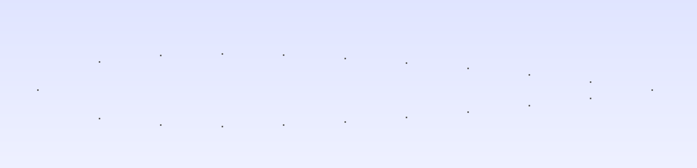
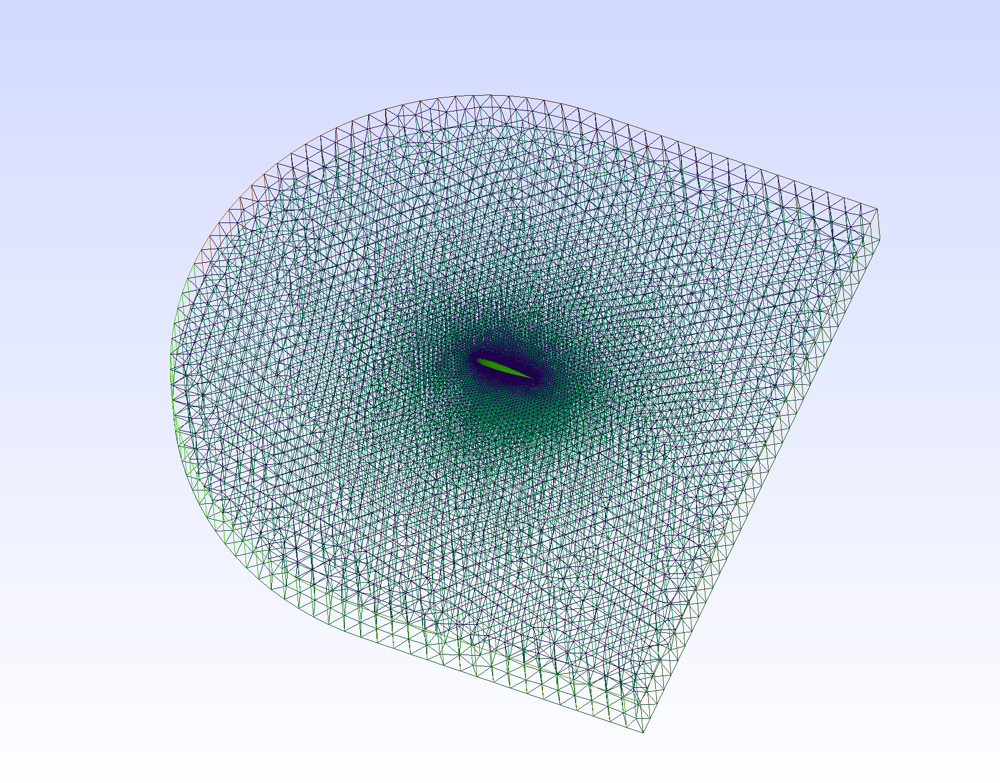

CFD modeling of the flow behavior over NACA0012 airfoil
Author
Ole Petersen
Published
Dec 18, 2022
Abstract
In this tutorial, I will show from end to end how to do a 2d CFD simulation of an aerofoil including the generation of the geometry, the meshing using gmsh and the simulation using OpenFoam.
Introduction
The starting point is the NACA0012 tutorial case in OpenFoam. Copy this case to your new working directory. In this tutorial, we will have a look at how to simulate your custom 2d geometry as the tutorial is intransparent about how the mesh was generated.
Mesh generation
We will use gmsh to generate the mesh. To do so, we will first generate the geometry using gmsh’s geometry format, use the gmsh GUI to debug the geometry and finally generate the mesh.
Geometry generation
The geometry will look as follows:
Geometry of our simulation
The volume in which fluid is to be simulated is the whole body from which the aerofoil in the middle is cut out. The circle arc on the left is the inlet while the outlet is the rectangle on the right.
The whole geometry generation is done in the mesh_generation.jl script, which outputs a gmsh geometry file aerofoil.geo that gmsh can read. Note that gmsh has its own geometry scripting language, but I found it easier to use a proper programming language like julia to generate the geometry.
Generating the profile
We will simulate a NACA0012 airfoil, which is described by the following equation: \[
y(x) = \pm0.594689181*(0.298222773*\sqrt{x} - 0.127125232*x - 0.357907906*x^2 + 0.291984971*x^3 - 0.105174606*x^4)
\] Now, we will generate a set of points that describe the profile:
y(x)=0.594689181*(0.298222773*sqrt(x) -0.127125232*x -0.357907906*x^2+0.291984971*x^3-0.105174606*x^4)n_points_per_side=10# this would be much higher in the real casen_aerofoil_points=2*n_points_per_sideio=stdoutfor i in1:n_points_per_side x=(i-1)/(n_points_per_side) mesh_size=0.005println(io,"Point($i) = {$x, $(y(x)), 0.0,$mesh_size};")endfor i in1:n_points_per_side x=1-(i-1)/(n_points_per_side) mesh_size=0.005println(io,"Point($(i+n_points_per_side)) = {$(x), $(-y(x)), 0.0,$mesh_size};")end
The syntax is Point(i) = {x, y, z, mesh_size}; where i is a unique index of the point, x, y and z are the coordinates and mesh_size is the desired mesh size at this point. Pasting this output into a file called aerofoil.geo (or setting the script up to write its output to that file like in the final version and running gmsh aerofoil.geo will prompt you with the following:

Profile points
The next critical step is to connect all the points with a spline. The profile points should be connected with a single spline instead of a set of hundreds of single lines since this will later enable us to name the aerofoil surface. This is done by the following code:
The syntax is Spline(i)={p1,p2,...pk}; where i is a unique index of the spline and pi are the indices of the points the spline should connect. pi:pj is a shorthand for pi,pi+1,...,pj. The 1 at the end of the line is the first index again, which is needed to close the spline. The result is the following:
Profile with spline
Generating the bounding box
The next step is to generate the bounding box. This is done by the following code:
We join a set of lines to a loop with Curve Loop(i) = {p1,p2,...pk}; where i is a unique index of the loop and pi are the indices of the lines the loop should connect. Loop 2 is the bounding box and loop 3 is the aerofoil. We then join the loops to a surface with Plane Surface(i) = {l1,l2,...lk}; where i is a unique index of the surface and li are the indices of the loops the surface should connect. This does not make a visual difference.
Extruding the geometry
OpenFoam does not allow us to use 2D geometries, so we need to extrude the geometry in the z-direction. This is done by the following code:
We extrude in the direction of the vector {0,0,meshThickness} with Extrude {0, 0, meshThickness} {Surface{1};Layers{1};Recombine;};. Surface{1}; tells gmsh we want to extrude the surface with the index one we just created. The Layers{1} command tells Gmsh to only generate one mesh layer. The Recombine command does something I do not understand but is recommended in other tutorials.
Finally, we need to assign names to surfaces in order to be able to later set boundary conditions in OpenFoam. The keyword Physical means that a name needs to be exported to the mesh. The syntax is Physical Surface{"name_i_choose"}={p1,p2,...pk}; where p1,p2,...pk are the indices of the surfaces we want to assign the name to. The same holds for volumes. The names we choose are frontAndBackPlanes, INLET, OUTLET, AIRFOIL and WALL. The names are not important, but they need to be consistent with the names we use in OpenFoam. The Extrude command returns a list of surfaces it created by the extrusion as well as the volume it created. The ordering of these values is described by the docs as follows:
By default, the list contains the “top” of the extruded entity at index 0 and the extruded entity at index 1, followed by the “sides” of the extruded entity at indices 2, 3, etc.
Now you see why it is important the aerofoil consists of only one loop: Else we would have to assign a few hundred surfaces to a physical surface now. Even now the assignment is not trivial, but you can either try to keep track of the order in which the lines were added to the extrusion or use the visibility tool in gmsh, go to the tree view, select only one physical surface and click Apply. This will show you if you assigned the physical surface to the correct surfaces.
Meshing the geometry
Now we have the geometry ready to be meshed. Running the geometry generation script will create a file aerofoil.geo in the current directory. We can now run gmsh on this file to create the mesh:
julia mesh_generation.jlgmsh-3 aerofoil.geo -format msh2
Here, the -3 flag tells gmsh to create a 3D mesh. The -format msh2 flag tells gmsh to create a mesh in the msh2 format instead of the newest msh4 format. This is necessary since else we will not be able to convert the mesh to the OpenFoam format, resulting in hard-to-debug errors. The resulting mesh file aerofoil.msh can be viewed by typing gmsh aerofoil.msh in the terminal. The result should look like this:

Mesh
However, you might realize the cells in this mesh have a triangular cross-section. My experience is that this is less numerically stable in practice. Therefore I added
Recombine Surface{1};
to the gmsh geometry. This causes neighbouring triangular cells to be recombined into more effective shapes. The result looks like this:
Recombined mesh
Converting the mesh to OpenFoam format
Now we have the mesh in the msh2 format by running
# load OpenFoam into contextsource /opt/OpenFOAM/OpenFOAM-10/etc/bashrcgmshToFoam aerofoil.msh
This will create a directory constant/polyMesh with the mesh in the OpenFoam format. Now have a look at the constanc/boundary file. It should look like this:
Now we need to assign the types of the frontAndBackPlanes to empty, telling OpenFoam that the geometry is “pseudo-2d” and that of the AIRFOIL to wall. We can do this either by editing the file manually or by running
function setBoundaryType{foamDictionary constant/polyMesh/boundary -entry entry0/$1/type -set$2}setBoundaryType frontAndBackPlanes emptysetBoundaryType AIRFOIL wall
And now we have our mesh!
Setting boundary conditions
Boundary conditions are set in the 0 directory. Here we reference the names we gave to the physical surfaces earlier and set values accordingly. For example the velocity boundary conditions are set as follows:
The #calc macro can be used to evaluate expressions and I use it to be able to set the angle of attack. For the other fields, have a look at the repository.
Turbulence models
I set up this case to work with the k-epsilon, k-omega and Spallart Allamars turbulence models. These use additional fields to model turbulence. The initial conditions for these fields are also set up in the [0-directory] (case/0). Since the nut field is shared between turbulence models, the boundary conditions must be changed when setting a turbulence model, uncomment the correct values in the file.
Running the simulation
Now we can run the simulation by running
./Allclean./Allrun
in the case directory. Now calling paraFoam -builtin will open a window with the results, here showing the pressure field at 10° angle of attack:
Pressure field
Postprocessing
Finally, we might want to compute force coefficients. To do so, we edit system/controlDict:
...timePrecision 6;runTimeModifiable true;// here the new code startsfunctions{ calcForceCoefficients { type forceCoeffs; functionObjectLibs ( "libforces.so" ); enabled true; writeControl outputTime; p p; U U; rhoInf 1.225; rho rhoInf; CofR (0 0 0); patches (AIRFOIL); liftDir (0 1 0); dragDir (1 0 0); magUInf 51.4815; pitchAxis (0 0 1); lRef 1; Aref 1.0; }}
We are specifying that force coefficients should be computed from the pressure and velocity fields at a certain density, the center of rotation is in the origin (for calculating rotation coefficients), we want to compute forces on the AIRFOIL patch/surface, the lift direction is in the y-direction, the drag direction is in the x-direction, the freestream velocity is 51.4815 m/s, the pitch axis is in the z-direction, the reference length is 1 m and the reference area is \(1m^2\) (1m length, the extrusion depth is 1m). Now we can run the simulation again and the results will be written to postProcessing/forceCoeffs/0/forceCoeffs.dat. The results should look like this for an angle of attack of 10°:
The coefficients are calculated at each time step of the solver (a time step is more of an iterative step since the simulation is steady). Note that the lift- and drag direction are not set according to the convention, normally the lift is perpendicular to the free stream velocity and not to the aerofoil. One can either fix this in the configuration or by rotating lift and drag by the angle of attack after the simulation, which is done here.
Results
Single angle of attack
The following script runs the simulation at the angle of attack given in the argument:
#!/bin/bash
cd "$(dirname "$0")" # change into location of this script
echo "Running airfoil simulation at $1 degrees at location $(pwd)"
# source /opt/OpenFOAM/OpenFOAM-10/etc/bashrc
foamDictionary 0/U -entry angle -set $1
./Allclean
./Allrun
if [[ -z "${SILENT}" ]]; then
paraFoam -builtin
fi
It uses the foamDirectory command line utility to set the correct angle of attack (does work for all angles except \(0\)), runs the case and opens paraFoam to display the result if the SILENT environment variable has not been set. The resuls my look like this:
Velocity field for 12° angle of attack
You can also use the Filters->Common->Streamtracer utility in paraFoam to generate streamlines:
Streamlines for 12° angle of attack
Characteristic curves
The following script runs the simulation at multiple angles of attack in parallel, copying results to a single file calles allResults.dat:
It copies the case directory to a new temporary directory for each angle of attack, runs the run_at_angle.sh script, waits for all the simulations to finish and writes the last line of the calcForceCoefficients postprocessing output to a file called allResults.dat. The directory to write the results to is determined by the contents of the config.json file which allows you to save the results for multiple configurations. write_esh_properties.sh updates the config file with the current configuration of the mesh.
The results can be plotted like this:
usingDataFrames,CSV, JSON3, PlotsturbModels=readdir("case/results")resultData::Dict{String,Dict{String,DataFrame}}=Dict()configs::Dict{String,Dict{String,Any}}=Dict()for turbModel in turbModels resultData[turbModel]=Dict() configs[turbModel]=Dict() result_names=readdir("case/results/$turbModel")for result_name in result_names config=JSON3.read(read("case/results/$turbModel/$result_name/config.json")) configs[turbModel][result_name]=config#display(config["cells"]) dataString=open(f->read(f, String), "case/results/$turbModel/$result_name/allResults.dat")# remove whitespaces and replace them with commas filteredString=reduce(dataString;init="") do l,r (r==' '||r=='\t') ? (l[end]==',' ? l : l*",") : l*rend liftData=CSV.File(IOBuffer(filteredString), header=false) |> DataFrame |>Matrix#display(liftData) tangentCoeffs=liftData[:,4] normalCoeffs=liftData[:,5] angles=liftData[:,1] radAngles=deg2rad.(angles) liftCoeffs=cos.(radAngles).*normalCoeffs.-sin.(radAngles).*tangentCoeffs dragCoeffs=sin.(radAngles).*normalCoeffs.+cos.(radAngles).*tangentCoeffs df=DataFrame(angle=angles, tangent_coefficient=tangentCoeffs, normal_coefficient=normalCoeffs, lift_coefficient=liftCoeffs, drag_coefficient=dragCoeffs)#display(df) resultData[turbModel][result_name]=dfendendp_lift=plot(label="Lift coefficient", xlabel="Angle of attack [deg]", ylabel="\$C_L\$", title="Lift coefficient for k-epsilon model", ylims=(0,1.5))plots=[]for (result_name, result) in resultData["kEpsilon"]plot!(p_lift,result.angle, result.lift_coefficient, label=configs["kEpsilon"][result_name]["name"])enddisplay(p_lift)
You can see that the finest structured mesh did not converge.
Similarly, the drag coefficients can be plotted like this:
p_drag=plot(label="Drag coefficient", xlabel="Angle of attack [deg]", ylabel="\$C_D\$", title="Drag coefficient for k-epsilon model", ylims=(0,1.5))plots=[]for (result_name, result) in resultData["kEpsilon"]plot!(p_drag,result.angle, result.drag_coefficient, label=configs["kEpsilon"][result_name]["name"])enddisplay(p_drag)
I hope this post made it a bit easier to understand how a 2D CFD simulation of an external flow can be performed using OpenFoam and gmsh!